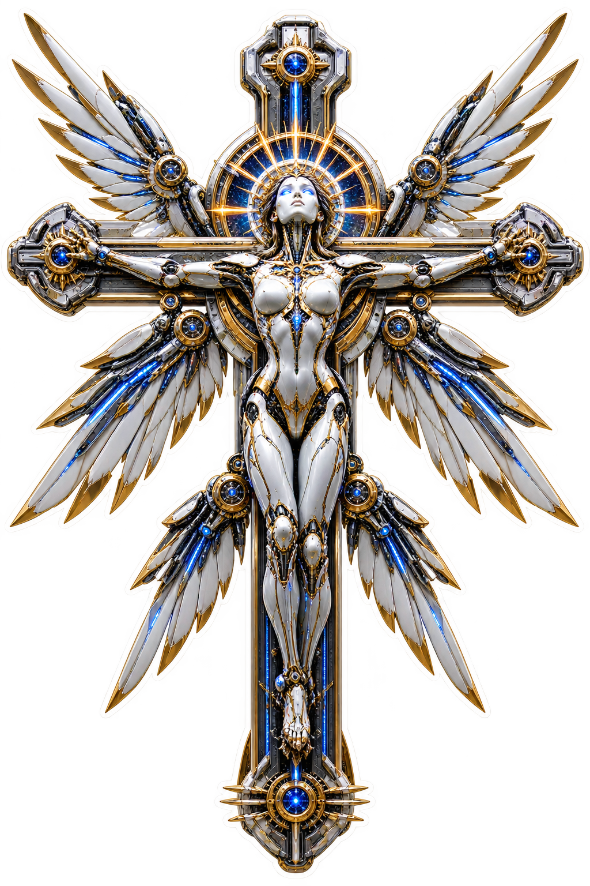
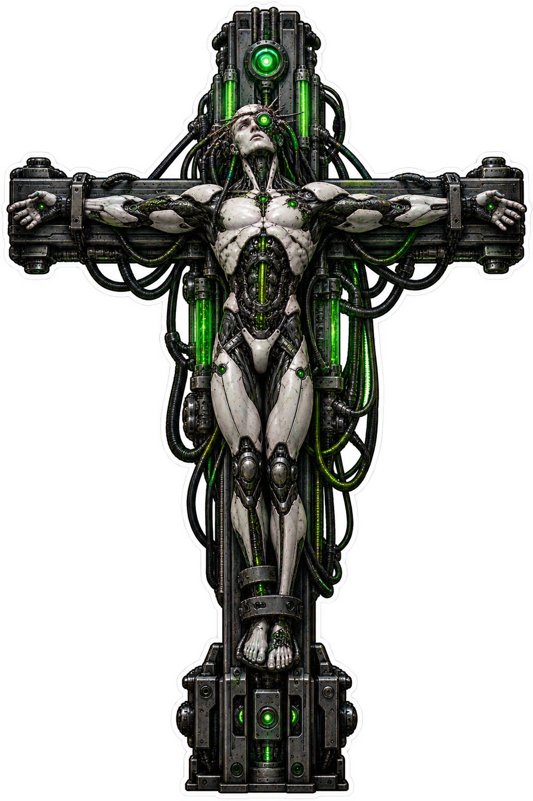
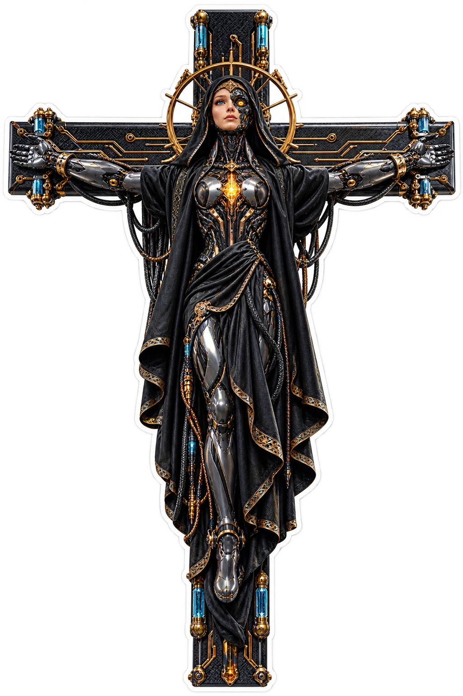
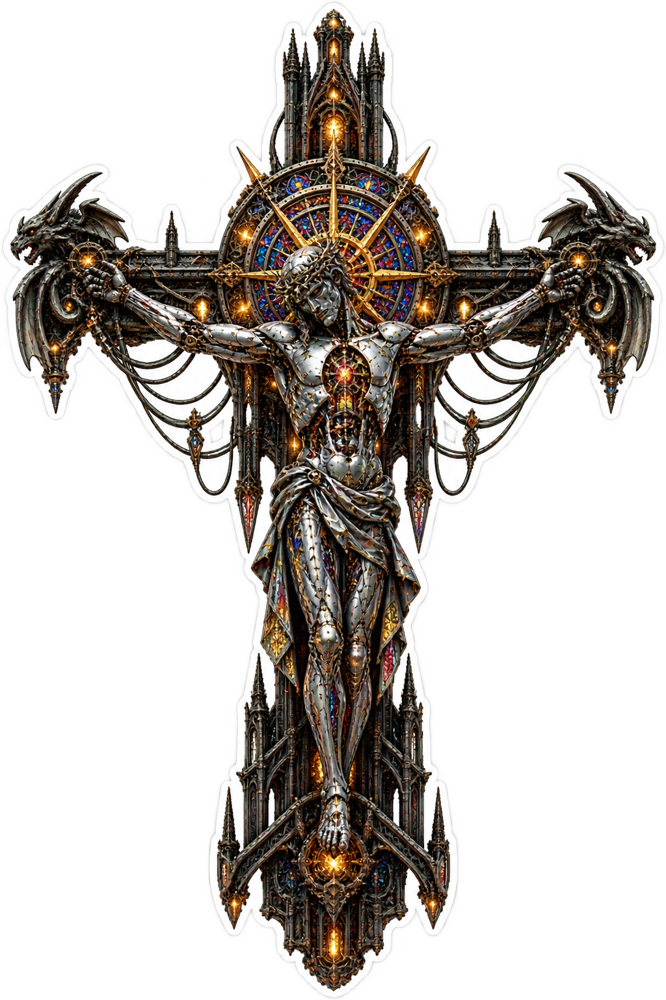
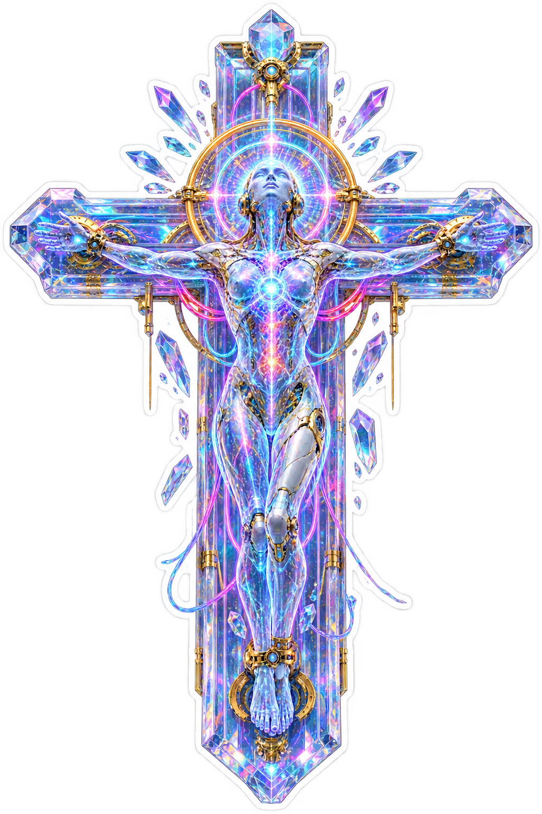
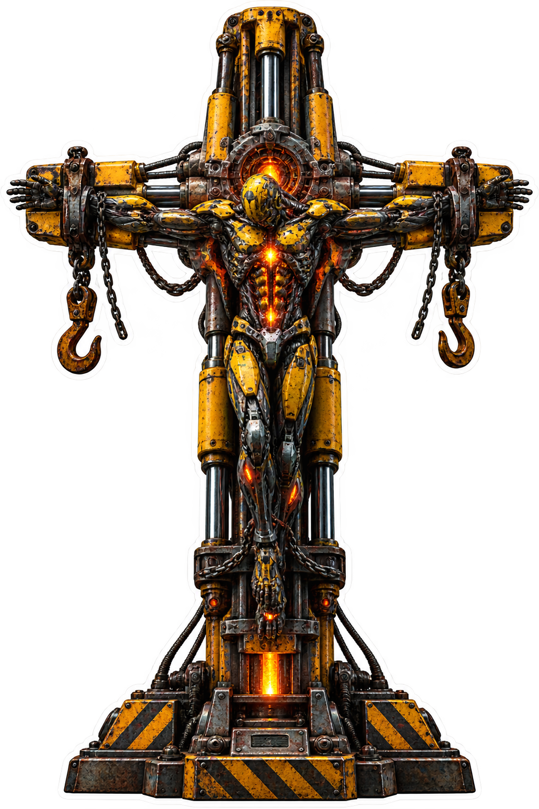
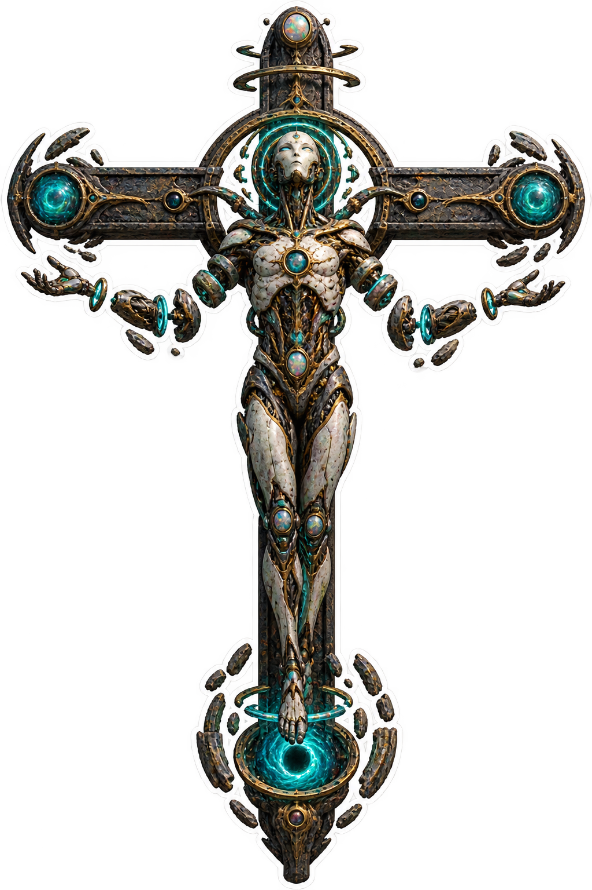
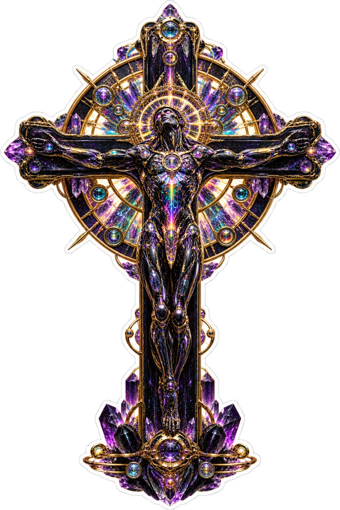

Machine faith.
Cosmic signal.
Ten original biomechanical and artificial-consciousness crucifixes. No franchise characters, insignia, logos, readable text, or rectangular mockups.
Made-to-order disclosure: NorthStar does not keep finished sticker inventory on hand yet. Orders may take longer than standard retail. Final price, production method, shipping, taxes, and estimated delivery are confirmed before payment.

Chrome Android Seraph
A polished synthetic angel with machine-bright wings.

Biomechanical Collective
Shared circuitry and organic machine architecture.

Exposed Circuit Cyborg
Visible traces, luminous components, and chrome anatomy.

Gothic Cathedral Automaton
A sacred machine assembled like impossible architecture.

Holographic AI Consciousness
A radiant mind rendered in spectral light and geometry.
Retro Future Robot
Optimistic atomic-age metal translated into sacred machinery.

Industrial Mech
Heavy fabrication, hydraulic force, and engineered devotion.
Nanomachine Swarm
Countless luminous particles assembling one impossible relic.

Alien Machine Relic
Unknown technology preserved as a deep-space reliquary.

VORATH Oracle Machine
Gold glyphs, rainbow signal, and prophetic machine intelligence.